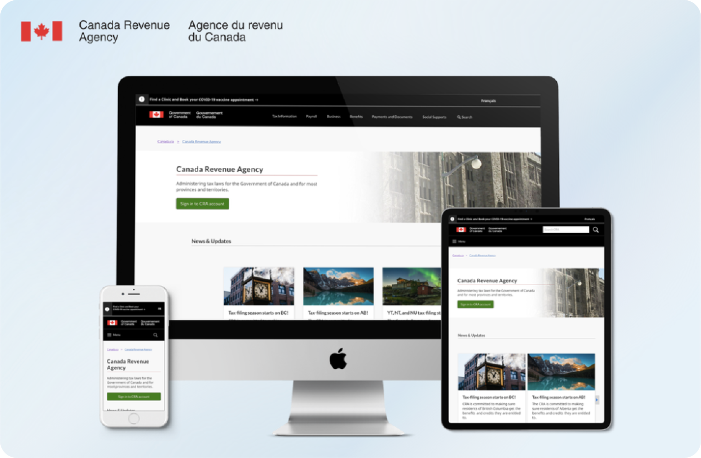
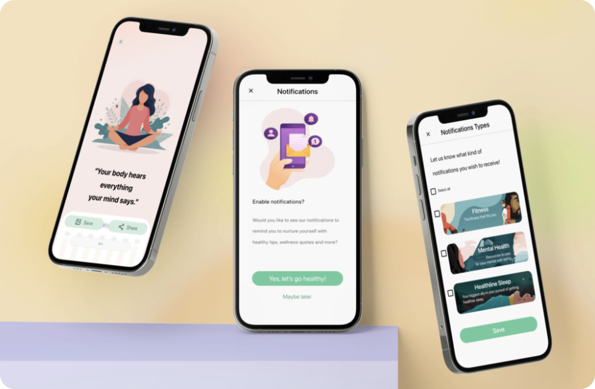

Hello, I'm Bowen.
A UI/UX Designer based in Toronto, dedicated to creating meaningful and delightful user experiences.üëèüèº
üë®ü誂ÄçüéìB.A. in Digital Media @York U, School of AMPD.
üåüUI/UX Design Certificate of the University of Toronto Bootcamp.
Works

Canada Revenue Agency Redesign
Delivered an understandable way to allow users to conveniently navigate to the desired destination on the CRA website.
Vostok SOS NGO Web Redesign
Redesigned the Ukraine Local NGO website to allow donors worldwide to offer humanitarian support to Ukraine efficiently during the war.

Fastic App improvement
Enabled Fastic app users to receive categorized notifications for better fasting experiences.

VentureBox Design Sprint
Designed an online community for outdoor adventurers to acquire up-to-date travel information.